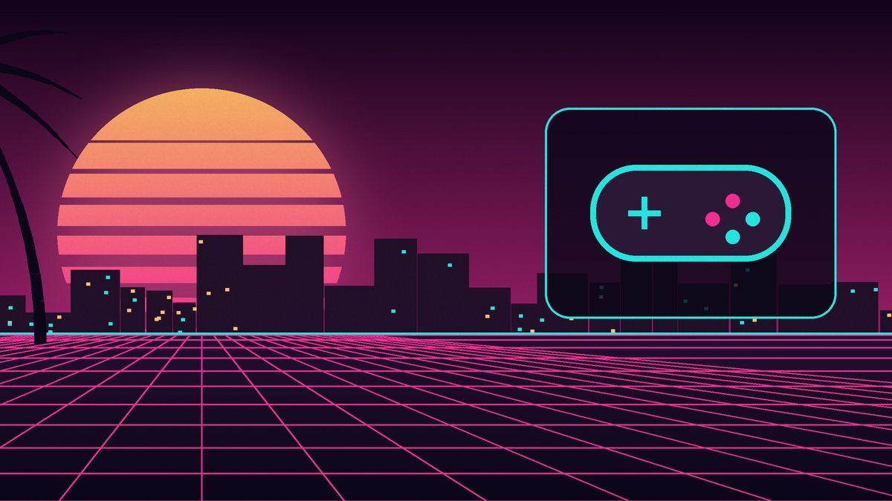

La caja fuerte de Chatfield Storage se abre con 5800, y hay más códigos que no piden pista
En Waxman Island hay un almacén con una caja fuerte, una pistola única y un superdeportivo morado. El código es 5800, y no es el único candado de Leonida que se abre sin tener que buscar la combinación.
Por Redacción Golpe Diario · Publicado el

Qué ha pasado
Aparte de las guaridas de las bandas, con sus diez códigos ya repartidos en un artículo anterior de este sitio, Leonida tiene otros almacenes y locales con caja fuerte propia, sin relación con ninguna banda. Uno de los más completos es Chatfield Storage & Logistics, en Waxman Island, la isla que separa Vice City de Vice Beach. Según games.gg, el almacén está en el lado oeste de la isla, junto al taller Pay 'n' Spray y debajo de la autovía que conecta las dos zonas; GameRant lo describe desde el otro extremo, al este de Vice City y al norte de ese mismo Pay 'n' Spray, pero las dos guías señalan el mismo edificio.
El código de la caja es 5800. GameRant explica que se puede conseguir sin forzar nada: dentro del recinto hay un portátil en la zona de carga con un correo que lo revela. Si prefieres ir más rápido, games.gg recuerda que una bomba adhesiva sobre la puerta también la abre, sin necesidad de teclear nada. Dentro hay un fajo de billetes que GameRant calcula en unos 9.000 dólares, aunque games.gg no da ninguna cifra.
El almacén guarda dos objetos más. La pistola única Quarter Mile ES9 está en una funda de armas sobre un escritorio, en el mismo edificio que la caja. Y en el patio, dentro de un contenedor de envíos abierto, espera el Progen Purple Drank Emerus, un superdeportivo morado que, según GameRant, se vende por 30.000 dólares en el taller de Randy.
No es el único candado que se abre sin pista previa. GTA BOOM recoge, entre los códigos repartidos por Leonida, el 0420 de la trastienda de Moonstone Boutique: lo da directamente un empleado de la tienda durante la misión «Lab Fees», así que no hace falta buscarlo en ningún plano. Si lo olvidas, queda guardado en el apartado Notes del propio teclado.
El Crab Research Outpost, en Pelican Valley, tiene un sistema en varios pasos. Primero hay que activar la energía externa; con eso, la contraseña CLEAVES desbloquea el ordenador de dentro, y si no la recuerdas está escrita en el suelo del propio edificio, según GTA BOOM. La caja fuerte del sitio pide otro código, 0072, que sale de duplicar el número de especímenes conseguidos con éxito, y la puerta del muelle usa un tercer número distinto, anotado en una nota dentro de esa misma caja.
Qué significa para ti
- Si vas a Waxman Island, entra por el lado oeste, junto al Pay 'n' Spray: ahí está Chatfield Storage & Logistics.
- Teclea 5800 en la caja o pon una bomba adhesiva si no quieres buscar antes el portátil con el código.
- No te vayas sin la Quarter Mile ES9 del escritorio ni sin mirar el contenedor abierto del patio: ahí está el Purple Drank Emerus.
- En Moonstone Boutique, el código 0420 te lo da un empleado durante la misión «Lab Fees»; no hace falta buscar ningún plano.
- En el Crab Research Outpost sigue el orden: primero la energía externa, luego la contraseña CLEAVES y por último el 0072 de la caja fuerte.
Contrastado con: games.gg · GameRant · GTA BOOM
Sigue leyendo
El único truco de dinero de GTA 6: 250.000 dólares, pero solo después de terminar la historia
Entre los 61 códigos de trucos de GTA 6 hay uno que da 250.000 dólares de golpe. La pega es que no se puede usar hasta acabar la campaña, y activarlo tiene una letra pequeña que conviene conocer antes de probarlo.
Los aviones y helicópteros de GTA 6: lista completa y cómo pilotarlos
Rockstar no ha publicado una lista oficial, pero la base de datos de la comunidad ya cuenta diez aviones y nueve helicópteros, y una guía explica paso a paso cómo despegar, volar y aterrizar con cada uno.
El código de la caja fuerte de Avery Pawn Shop cambia en cada partida, y así lo consigues
A diferencia de otros candados de Leonida, la combinación de la caja fuerte de este atraco no es siempre la misma: hay que sacársela a un empleado durante el propio golpe, o buscar la nota de repuesto.